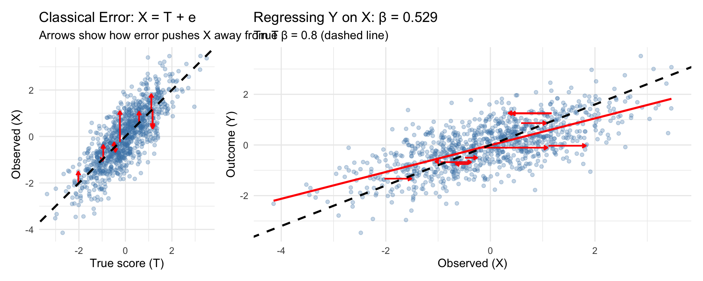
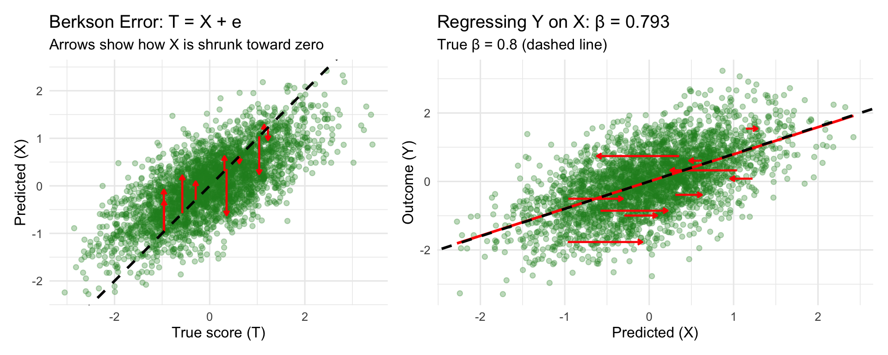
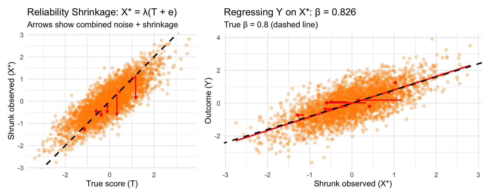
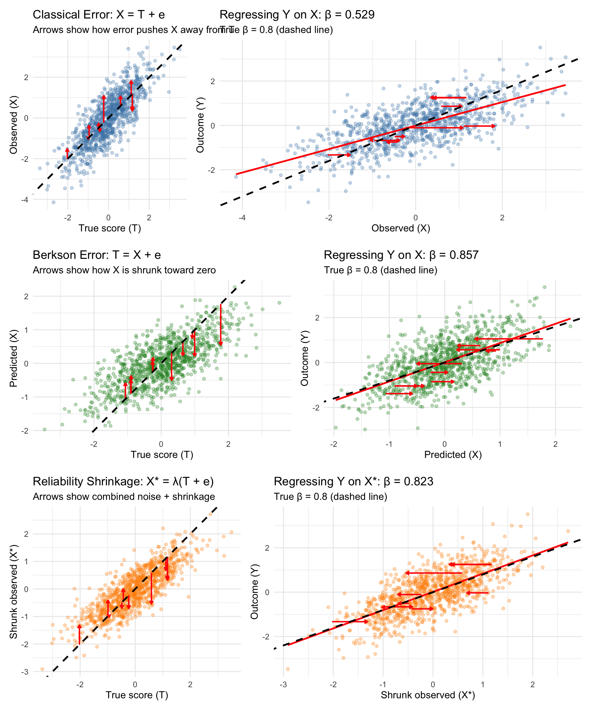

I have worked with imputed or synthetic estimates a few times. In my work on fertile window effects, we used the imputed probability of being in the fertile window (courtesy of Gangestad et al. 2016). In my work on steroid hormones across the cycle, I imputed serum sex steroids from menstrual cycle position. And recently, with Björn Hommel, we worked on synthetic estimates for correlations between survey items.

What these estimates have in common is that they come from a regression model, i.e. they are predicted true values. Also, none of them are free of error. Initially, I thought this error would need to be modelled (e.g, through SEM or errors-in-variables) if these estimates were to be used as predictors. Through simulations, I learned that this was not the case, their effects were unbiassed. I understood this had something to do with the fact that the regression basically “shrunk” the estimates, but I didn’t have a name for the problem.
Fortunately, LLMs make it easy to discover names you don’t know. So, today, when Stefan Schmukle asked me why the slopes of our synthetic correlations are 1 and not attenuated by error, I made some plots together with Claude Opus 4.5 and learned the name of this problem: Berkson Error.
There’s a lot of research on this, so here I’m just trying to convey the problem visually through simulations.
Common to all scenarios
You have a predictor \(T\) (the “true score”) that affects some outcome \(Y\):
\[Y = \beta T + \varepsilon\]
But you can’t observe \(T\) directly. Instead, you observe some proxy \(X\) that’s related to \(T\) but not identical. The question is: if you regress \(Y\) on \(X\) instead of \(T\), do you get the right answer?
The answer depends on how \(X\) and \(T\) are related. In psychology, we are most familiar with the classical test theory model (Scenario 1).
Scenario 1: Classical Measurement Error
The model: \(X = T + e\), where \(e \perp T\)
You’re trying to measure \(T\), but your measurement has random noise added to it. The noise is independent of the true value. This is what happens when you use a questionnaire with random response error, or when you measure blood pressure with an imprecise device.
df_classical <- data.frame(T = T_true, X = X_classical, Y = Y)
# Subset for arrows
set.seed(42)
arrow_idx <- sample(n, 10)
df_arrows_classical <- df_classical[arrow_idx, ]
p1_classical <- ggplot(df_classical, aes(x = T, y = X)) +
geom_point(alpha = 0.3, color = "steelblue") +
geom_segment(data = df_arrows_classical, aes(x = T, y = T, xend = T, yend = X),
arrow = arrow(length = unit(0.15, "cm")), color = "red", linewidth = 0.8) +
geom_abline(slope = 1, intercept = 0, linetype = "dashed", linewidth = 1) +
labs(title = "Classical Error: X = T + e",
subtitle = "Arrows show how error pushes X away from T",
x = "True score (T)", y = "Observed (X)") +
coord_fixed()
p2_classical <- ggplot(df_classical, aes(x = X, y = Y)) +
geom_point(alpha = 0.3, color = "steelblue") +
geom_segment(data = df_arrows_classical, aes(x = T, y = Y, xend = X, yend = Y),
arrow = arrow(length = unit(0.15, "cm")), color = "red", linewidth = 0.8) +
geom_smooth(method = "lm", se = FALSE, color = "red", linewidth = 1) +
geom_abline(slope = beta_true, intercept = 0, linetype = "dashed", linewidth = 1) +
labs(title = paste0("Regressing Y on X: β = ", round(beta_classical, 3)),
subtitle = paste0("True β = ", beta_true, " (dashed line)"),
x = "Observed (X)", y = "Outcome (Y)")
p1_classical + p2_classical
What happened? The slope is attenuated (biased toward zero). The estimated \(\hat{\beta} =\) 0.529 is smaller than the true \(\beta =\) 0.8.
Why? The noise in \(X\) is uncorrelated with \(Y\), so it just adds scatter. But crucially, the noise inflates \(\text{Var}(X)\) without increasing \(\text{Cov}(X, Y)\). Since \(\hat{\beta} = \text{Cov}(X,Y) / \text{Var}(X)\), the denominator gets bigger and the slope shrinks.
The attenuation factor is exactly the reliability: \(\hat{\beta} = \beta \times \frac{\text{Var}(T)}{\text{Var}(X)} = \beta \times \text{reliability}\)
Reliability: 0.673 Expected attenuation: 0.538 Actual estimate: 0.529 Do you need to correct this? Yes. This is what errors-in-variables (EIV) regression, SEM with latent variables, or SIMEX are designed to fix.
Scenario 2: Berkson Error
The model: \(T = X + e\), where \(e \perp X\)
This looks similar but is fundamentally different. Here, \(X\) is a prediction of \(T\), and \(T\) is the prediction plus some residual. The residual is independent of the prediction (by construction, if \(X\) comes from a regression model).
This happens when:
- You use predicted values from a regression model as your predictor (the regression model can be fancy, like our synthetic correlation estimates which are from a fine-tuned transformer model)
- You assign group means to individuals (e.g., average exposure for a job category)
- You use imputed values (e.g., my serum steroid example)
- You use factor scores or other latent variable estimates (do people do this?)
# Berkson error: T = X + e, so X = T - e (sort of)
# Better: generate X first, then T = X + e
# To keep same T, we back out what X would be
# Actually, let's regenerate properly to show the structure
set.seed(123)
X_berkson <- rnorm(n, mean = 0, sd = 0.7) # The "predicted" value
e_berkson <- rnorm(n, mean = 0, sd = 0.7) # Prediction residual
T_berkson <- X_berkson + e_berkson # True score = prediction + residual
# Outcome based on true score
Y_berkson <- beta_true * T_berkson + rnorm(n, mean = 0, sd = 0.5)
# Regression using the prediction
fit_berkson <- lm(Y_berkson ~ X_berkson)
beta_berkson <- coef(fit_berkson)[2]
# Oracle regression
fit_berkson_oracle <- lm(Y_berkson ~ T_berkson)
beta_berkson_oracle <- coef(fit_berkson_oracle)[2]df_berkson <- data.frame(T = T_berkson, X = X_berkson, Y = Y_berkson)
# Subset for arrows - show how X is shrunk relative to T
set.seed(42)
arrow_idx <- sample(n, 10)
df_arrows_berkson <- df_berkson[arrow_idx, ]
p1_berkson <- ggplot(df_berkson, aes(x = T, y = X)) +
geom_point(alpha = 0.3, color = "forestgreen") +
geom_segment(data = df_arrows_berkson, aes(x = T, y = T, xend = T, yend = X),
arrow = arrow(length = unit(0.15, "cm")), color = "red", linewidth = 0.8) +
geom_abline(slope = 1, intercept = 0, linetype = "dashed", linewidth = 1) +
labs(title = "Berkson Error: T = X + e",
subtitle = "Arrows show how X is shrunk toward zero",
x = "True score (T)", y = "Predicted (X)") +
coord_fixed()
p2_berkson <- ggplot(df_berkson, aes(x = X, y = Y)) +
geom_point(alpha = 0.3, color = "forestgreen") +
geom_segment(data = df_arrows_berkson, aes(x = T, y = Y, xend = X, yend = Y),
arrow = arrow(length = unit(0.15, "cm")), color = "red", linewidth = 0.8) +
geom_smooth(method = "lm", se = FALSE, color = "red", linewidth = 1) +
geom_abline(slope = beta_true, intercept = 0, linetype = "dashed", linewidth = 1) +
labs(title = paste0("Regressing Y on X: β = ", round(beta_berkson, 3)),
subtitle = paste0("True β = ", beta_true, " (dashed line)"),
x = "Predicted (X)", y = "Outcome (Y)")
p1_berkson + p2_berkson
As you can see, the slope is correct! \(\hat{\beta} =\) 0.857 \(\approx\) 0.8. The key is that the error \(e\) is independent of the predictor \(X\). This means OLS assumptions are satisfied. Yes, there’s “error” in the sense that \(X \neq T\), but it’s the right kind of error.
Visually, the values of X are shrunken towards the mean from the true value. So, whereas the attenuated slope in Scenario 1 was less steep, because the X values are scattered outward horizontally, this doesn’t happen here.
Mathematically: \[\text{Cov}(X, Y) = \text{Cov}(X, \beta T + \varepsilon) = \beta \text{Cov}(X, X + e) = \beta \text{Var}(X)\]
So \(\hat{\beta} = \text{Cov}(X, Y) / \text{Var}(X) = \beta\). No attenuation!
So, you don’t need to do further correction (e.g., using SEM or errors-in-variables). Using the predicted values directly gives you unbiased slopes. The only cost is wider standard errors (because \(\text{Var}(X) < \text{Var}(T)\)).
Scenario 3: Kelley’s formula
Now, you might ask (or I did at least): Why do we bother with complex models like errors-in-variables and SEM when we can just shrink the number? In psychology, we actually do this sometimes, using Kelley’s formula. But this is mainly used in diagnostics and rarely connected to the concept of shrinkage elsewhere in statistics in our textbooks, leading to some confusion. Stefan wrote about this because there’s a widespread misunderstanding about how to calculate confidence intervals for such scores.
The model: \(X^* = \lambda \cdot (T + e)\), where \(e \perp T\)
This is what happens when you try to “correct” classical measurement error by shrinking the observed values toward the mean. The idea is: if \(X = T + e\) has error, maybe multiplying by the reliability \(\lambda = \text{Var}(T)/\text{Var}(X)\) will fix it?
# Start with classical error
e_shrink <- rnorm(n, mean = 0, sd = 0.7)
X_raw <- T_true + e_shrink
# "Correct" by multiplying by reliability (Kelley formula)
reliability_shrink <- var(T_true) / var(X_raw)
X_shrunk <- reliability_shrink * X_raw + (1 - reliability_shrink) * mean(X_raw)
# Regression
fit_shrunk <- lm(Y ~ X_shrunk)
beta_shrunk <- coef(fit_shrunk)[2]df_shrink <- data.frame(T = T_true, X_raw = X_raw, X = X_shrunk, Y = Y)
# Subset for arrows
set.seed(42)
arrow_idx <- sample(n, 10)
df_arrows_shrink <- df_shrink[arrow_idx, ]
p1_shrink <- ggplot(df_shrink, aes(x = T, y = X)) +
geom_point(alpha = 0.3, color = "darkorange") +
geom_segment(data = df_arrows_shrink, aes(x = T, y = T, xend = T, yend = X),
arrow = arrow(length = unit(0.15, "cm")), color = "red", linewidth = 0.8) +
geom_abline(slope = 1, intercept = 0, linetype = "dashed", linewidth = 1) +
labs(title = "Reliability Shrinkage: X* = λ(T + e)",
subtitle = "Arrows show combined noise + shrinkage",
x = "True score (T)", y = "Shrunk observed (X*)") +
coord_fixed()
p2_shrink <- ggplot(df_shrink, aes(x = X, y = Y)) +
geom_point(alpha = 0.3, color = "darkorange") +
geom_segment(data = df_arrows_shrink, aes(x = T, y = Y, xend = X, yend = Y),
arrow = arrow(length = unit(0.15, "cm")), color = "red", linewidth = 0.8) +
geom_smooth(method = "lm", se = FALSE, color = "red", linewidth = 1) +
geom_abline(slope = beta_true, intercept = 0, linetype = "dashed", linewidth = 1) +
labs(title = paste0("Regressing Y on X*: β = ", round(beta_shrunk, 3)),
subtitle = paste0("True β = ", beta_true, " (dashed line)"),
x = "Shrunk observed (X*)", y = "Outcome (Y)")
p1_shrink + p2_shrink
It works! \(\hat{\beta} =\) 0.823 \(\approx\) 0.8. In the univariate case that is.
Mathematically, the shrinkage reduces \(\text{Var}(X)\) by exactly the factor needed to offset the attenuation. It’s algebraically equivalent to dividing the attenuated slope by the reliability.
Visually, it’s the same as above.
So why don’t we do this all the time? The problem emerges in the multivariate case (and presumably in many other cases). Let’s see:
set.seed(456)
n <- 2000
beta1 <- 0.6
beta2 <- 0.4
# Correlated true scores
rho_T <- 0.5
T1 <- rnorm(n)
T2 <- rho_T * T1 + sqrt(1 - rho_T^2) * rnorm(n)
Y_multi <- beta1 * T1 + beta2 * T2 + rnorm(n, sd = 0.5)
# Classical error
e1 <- rnorm(n, sd = 0.7)
e2 <- rnorm(n, sd = 0.7)
X1_classical <- T1 + e1
X2_classical <- T2 + e2
# Berkson error (generate predictions, then true = pred + residual)
X1_berkson <- rnorm(n, sd = 0.7)
X2_berkson <- rho_T * X1_berkson + sqrt(1 - rho_T^2) * rnorm(n, sd = 0.7)
e1_berk <- rnorm(n, sd = 0.7)
e2_berk <- rnorm(n, sd = 0.7)
T1_berkson <- X1_berkson + e1_berk
T2_berkson <- X2_berkson + e2_berk
Y_berkson <- beta1 * T1_berkson + beta2 * T2_berkson + rnorm(n, sd = 0.5)
# Reliability shrinkage (Kelley formula)
rel1 <- var(T1) / var(X1_classical)
rel2 <- var(T2) / var(X2_classical)
X1_shrunk <- rel1 * X1_classical + (1 - rel1) * mean(X1_classical)
X2_shrunk <- rel2 * X2_classical + (1 - rel2) * mean(X2_classical)
# Fit models
fit_oracle <- lm(Y_multi ~ T1 + T2)
fit_classical <- lm(Y_multi ~ X1_classical + X2_classical)
fit_berkson <- lm(Y_berkson ~ X1_berkson + X2_berkson)
fit_shrunk <- lm(Y_multi ~ X1_shrunk + X2_shrunk)
results <- data.frame(
Method = c("Oracle (true T)", "Classical error", "Berkson error", "Reliability shrinkage"),
beta1 = c(coef(fit_oracle)[2], coef(fit_classical)[2],
coef(fit_berkson)[2], coef(fit_shrunk)[2]),
beta2 = c(coef(fit_oracle)[3], coef(fit_classical)[3],
coef(fit_berkson)[3], coef(fit_shrunk)[3])
)
knitr::kable(results, digits = 3,
caption = "Multivariate regression: True β1 = 0.6, β2 = 0.4")| Method | beta1 | beta2 | |
|---|---|---|---|
| T1 | Oracle (true T) | 0.600 | 0.401 |
| X1_classical | Classical error | 0.423 | 0.329 |
| X1_berkson | Berkson error | 0.627 | 0.407 |
| X1_shrunk | Reliability shrinkage | 0.664 | 0.485 |
Now we see the difference:
- Classical error: Both coefficients attenuated
- Berkson error: Both coefficients correct
- Kelley’s formula: Both coefficients inflated
The shrinkage approach fails in multivariate regression because it only corrects the variances, not the covariances. When predictors are correlated, you need to adjust the entire covariance matrix, which requires a proper errors-in-variables approach. The Berkson approach can also mislead us but is robust here.
Visual Summary
# Combine the plots from the three scenarios
(p1_classical + p2_classical) / (p1_berkson + p2_berkson) / (p1_shrink + p2_shrink) +
plot_layout(widths = c(1, 1.5))
Tabular Summary
| Error Type | Structure | What is X? | Univariate bias | Multivariate bias | Need correction? |
|---|---|---|---|---|---|
| Classical | X = T + e, e⊥T | Noisy measurement | Attenuated | Attenuated | Yes (EIV/SEM) |
| Berkson | T = X + e, e⊥X | Prediction/conditional expectation | None | None | No |
| Reliability shrinkage | X* = λ(T+e) | “Corrected” measurement | None | Inflated | Don’t do this |
The key insight for here is that it depends on the error model, specifically whether the error is independent of the predictor you’re using.
- In classical error, the error is part of X, so it correlates with X and biases slopes (it’s independent of T though).
- In Berkson error, the error is independent of X by construction, so OLS works fine.
So, when you use predicted values (from regression, imputation, machine learning, etc.) as predictors, you have Berkson error. The predictions will be “shrunken” relative to the true values, but that’s fine. The slope will be correct; you just pay a price in precision. You should not apply a classical-error correction with SEM/EIV, that would make things worse.